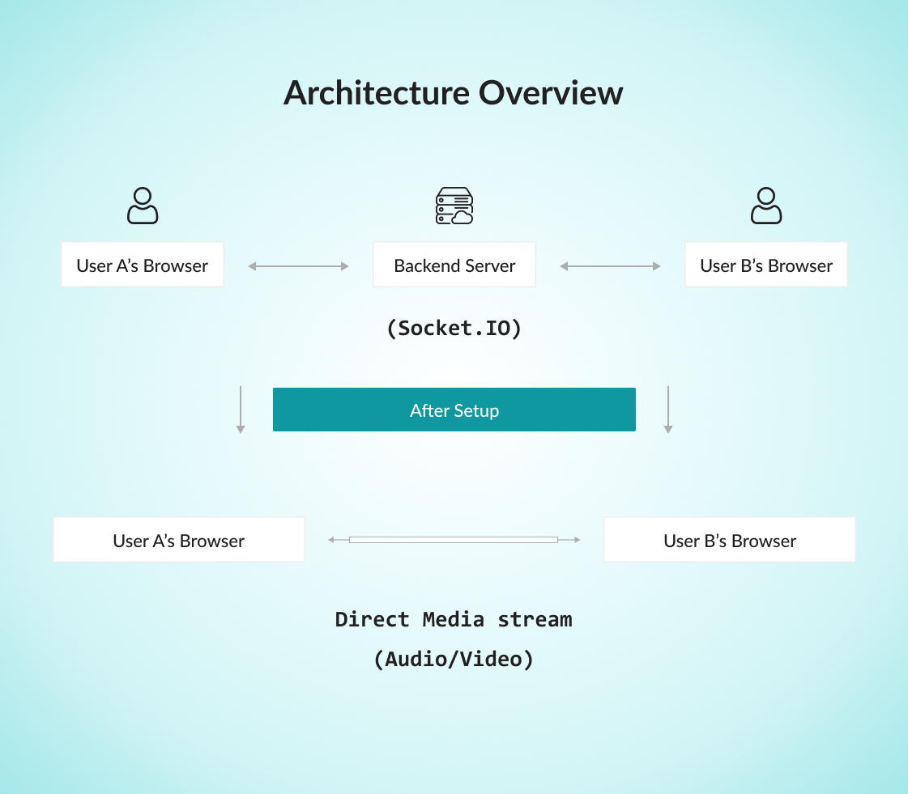
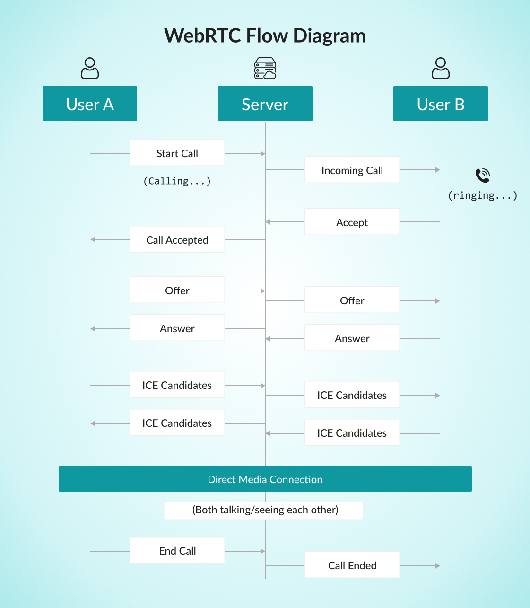

WebRTC in Wapi
WebRTC in Wapi
What is WebRTC?
WebRTC (Web Real-Time Communication) enables browsers to connect directly for audio calls, video calls, and screen sharing without any external plugins.
Simple Analogy:
Think of two people using walkie-talkies — they talk directly to each other instead of going through a phone network. WebRTC does the same for browsers, enabling direct audio and video transmission.
Key Concepts
-
Peer-to-Peer Connection: Direct link between users (no central server for media).
-
Media Streams:
-
Local Stream → your camera/mic
-
Remote Stream → other user’s camera/mic
-
Screen Stream → shared screen
-
-
Signaling: Exchange of setup info (offers, answers, and ICE candidates) via Socket.IO before establishing the direct link.
Why WebRTC in Wapi?
Wapi uses WebRTC to enable:
-
-Real-time voice/video calls (1-on-1 and group)
-
-Encrypted and high-quality communication
-
-Browser-native operation (no installations)
Architecture Overview

The Flow:
-
Signaling Phase: Connection info exchanged through Socket.IO.
-
Connection Phase: Direct peer-to-peer link established.
-
Media Phase: Audio/video streams flow directly between browsers.
Complete Call Flow
Step 1: Starting the Call
-
User A clicks call button → browser asks for camera/mic access.
-
Local stream captured, unique Call ID generated.
-
“User A is calling User B” event sent to server → User B notified.
Step 2: Receiving the Call
-
User B sees an incoming call prompt (Accept/Decline).
-
When accepted, browser captures User B’s media stream.
Step 3: Establishing the Connection
A. SDP Exchange (Offer/Answer):
-
User A creates an Offer and sends via server.
-
User B responds with an Answer.
-
Both sides agree on formats and media types.
B. ICE Candidate Exchange:
-
Both browsers share potential connection routes.
-
Best available route selected for stable connection.
C. Media Streaming:
-
Audio/video tracks added to the peer connection.
-
Streams start flowing directly between users.
Step 4: Active Call
-
During the call, users can:
-
Toggle camera/microphone
-
Share screen
-
View participants (in group calls)
Step 5: Ending the Call
-
On “End Call,” all media tracks stop, peer connections close, and UI resets.
-
Server notifies other users that the call ended.
WebRTC Flow Diagram
1-on-1 Call

Group Call (Mesh Topology)
Each participant connects to every other participant directly.
-
3 users → 6 total connections
-
4 users → 12 total connections Ideal for small groups (2–6 users).
Core Components in Wapi
1. WebRTC Service (webrtc.service.ts)
Handles all call operations:
-
initiateCall(), acceptCall(), declineCall(), endCall()
-
toggleAudio(), toggleVideo()
-
startScreenShare(), stopScreenShare()
2. Call State Management
Tracks:
-
Active participants
-
Audio/video status
-
Call state (idle, ringing, connected, ended)
-
Active media streams
3. Socket Communication
Manages real-time signaling:
-
Outgoing: initiate-call, webrtc-offer, ice-candidate
-
Incoming: incoming-call, webrtc-answer, call-ended
4. UI Components
-
CallManager: Core controller
-
CallNotification: Incoming call alerts
-
CallModal: Active call screen
-
CallControls: Buttons (mute, camera, screen share, end call)
Technical Details
STUN/TURN Servers
-
STUN: Finds public IP.
-
TURN: Relays media if direct route fails.
-
Wapi uses Google’s STUN and custom TURN for reliability.
Media Constraints
- {
- video: { width: 1280, height: 720, frameRate: 30 },
- audio: { echoCancellation: true, noiseSuppression: true, autoGainControl: true }
- }
Error Handling
-
Permission denied → fallback to audio-only or error message.
-
Network drops → automatic ICE restart.
-
No devices → displays descriptive error.
Common Scenarios
| Scenario | Behavior |
|---|---|
| No Camera | Converts to audio-only call. |
| Network Drop | Auto reconnect attempts before ending. |
| New User Joins | Connects to all existing participants dynamically. |
Security & Privacy
-
All media is end-to-end encrypted (DTLS-SRTP)
-
Camera/mic access requires user permission
-
Uses secure WebSocket (WSS) for signaling
-
No data stored — streams end immediately when call ends
What's Next?
Let’s get started — your team’s new home is Wapi Chat!